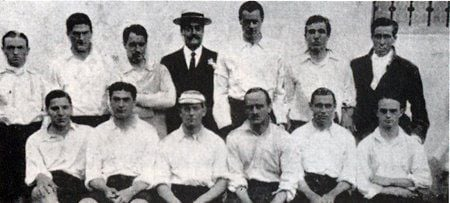

Sport Club Corinthians Paulista Historia
O Sport Club Corinthians Paulista, comumente referido como Corinthians, ou ainda pelo seu acrônimo SCCP, é um clube poliesportivo brasileiro da cidade de São Paulo, capital do estado de São Paulo. Foi fundado como uma equipe de futebol no dia 1 de setembro de 1910 por um grupo de operários do bairro Bom Retiro. Seu nome foi inspirado no Corinthian Football Club de Londres, que excursionava pelo Brasil.
Embora tenha atuado em outras modalidades esportivas ao longo dos anos, seu reconhecimento e suas principais conquistas foram alcançados no futebol. O clube é um dos mais bem sucedidos do Brasil e das Américas nos últimos anos.É o terceiro maior campeão nacional, com onze conquistas, ficando atrás somente do Palmeiras (17 conquistas) e Flamengo (14 conquistas). Conquistou dois Mundiais de Clubes da FIFA,uma Copa Libertadores da América de forma invicta, uma Recopa Sul-Americana, sete Campeonatos Brasileiros,três Copas do Brasil, uma Supercopa do Brasil, cinco Torneios Rio-São Paulo (recordista, ao lado de Palmeiras e Santos), 30 Campeonatos Paulistas (atual recordista) e uma Copa Bandeirantes (único vencedor).
Suas cores tradicionais são o branco e o preto. Desde 2014, manda suas partidas de futebol na Neo Química Arena. Seus rivais históricos são o Palmeiras, com quem disputa o Derby Paulista; o São Paulo, com quem disputa o Majestoso; e o Santos, com quem disputa o Clássico Alvinegro. Sua torcida é conhecida como "Fiel" e seus torcedores são estimados em aproximadamente 30 milhões espalhados por todo o Brasil e pelo mundo, atrás nacionalmente somente do carioca Flamengo. a sua torcida é considerada também uma das maiores torcidas do mundo.
De modalidades esportivas importantes ao longo da história corintiana, destacam-se o basquete, onde o clube desfrutou de relativo sucesso, especialmente durante as décadas de 1950 e 1960, com a conquista de títulos paulistas, brasileiros e até sul-americanos, a natação que rendeu quatro conquistas do Troféu Brasil de Natação, atual Troféu Maria Lenk, e o futsal, a partir da década de 1970, que rendeu conquistas em torneios estaduais e nacionais. A influência do remo na história do clube modificou o escudo original, que aludia meramente ao futebol, com o acréscimo do par de remos e da âncora como aparecem até os dias de hoje.
Historia
A equipe do Corinthian Football Club que excursionou no Brasil em 1910 e que inspirou a criação do Sport Club Corinthians Paulista. Em 1 de setembro de 1910, um grupo de cinco operários (Joaquim Ambrósio, Antônio Pereira, Rafael Perrone, Anselmo Correa e Carlos Silva) do bairro paulistano Bom Retiro, sob a luz de um lampião, às oito e meia da noite, decidiram criar um novo time de futebol, além de mais oito pessoas que contribuíram com 20 mil réis e também foram considerados sócios-fundadores. A ideia surgiu depois de assistirem à atuação do Corinthian FC, equipe inglesa de futebol fundada em 1882, que excursionava pelo Brasil. Os ingleses eram chamados pela imprensa da época de "Corinthian's Team", mas o time brasileiro só seria batizado "Sport Club Corinthians Paulista" depois de muita discussão e algumas reuniões. O presidente escolhido por eles foi o alfaiate Miguel Battaglia, que já no primeiro momento afirmou, "O Corinthians vai ser o time do povo e o povo é quem vai fazer o time". Da primeira arrecadação de recursos à compra da primeira bola de futebol do clube pouco tempo se passou, na verdade, apenas uma semana. Um terreno alugado na Rua José Paulino foi aplainado e virou campo, e foi lá que, já no dia 14 de setembro, o primeiro treino foi realizado diante de uma plateia entusiasmada que garantiu: "Este veio para ficar". De partida em partida o time foi se tornando famoso, mas era ainda um time de várzea.
Primeiros presidentes
Michele "Miguel" Battaglia (Cerami — São Paulo) foi um alfaiate[carece de fontes] italiano radicado no Brasil que se destacou por ter sido um dos sócios-fundadores e primeiro presidente da história do Sport Club Corinthians Paulista. Em 1 de setembro de 1910 Rafael Perrone, Joaquim Ambrosio, Anselmo Correa, Carlos da Silva e o português Antônio Pereira fundaram o Sport Club Corinthians Paulista. O clube ainda contou com o fundamental apoio de mais oito pessoas (consideradas sócios-fundadores do Corinthians): Miguel Battaglia (1º Presidente), Alexandre Magnani (2º Presidente), Salvador Lopomo, Antonio Vizzone, Emilio Lotito, Antônio Nunes, César Nunes e o inglês Jorge Campbell.